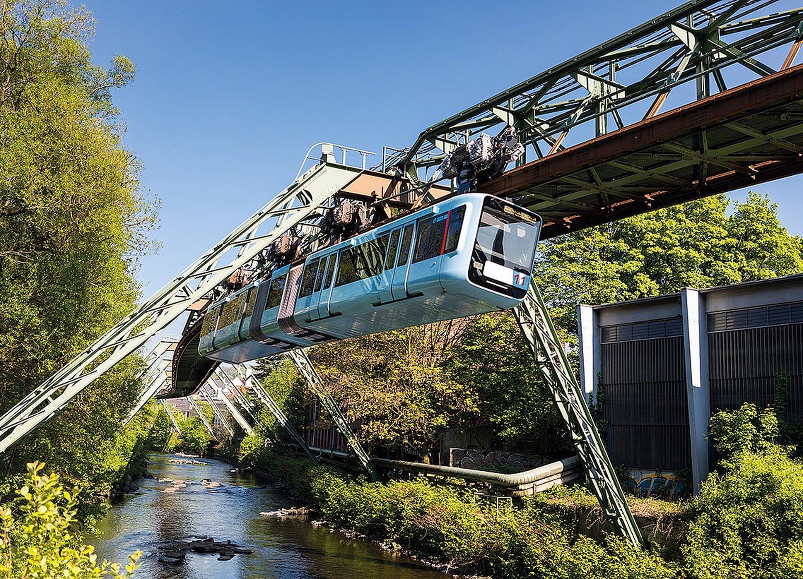

Four ways to bring the Schwebebahn photo onto the closing slide. Each preview loops its own fade animation every 9s so you can see how it'll feel on stage. Click your favorite, then tell me the variant letter.
Wuppertal photo fills the whole slide. Slow zoom-in over 10s (Ken Burns effect). White text floats on a dark gradient scrim for readability. Most dramatic — feels like a film closing shot.
Left half is Wuppertal, right half is "Thank you. Danke." text. Image slides in from off-screen-left while fading in. Like a magazine layout — clean, editorial.
"Thank you. Danke." stays at the top. A small Wuppertal postcard (with a handwritten "Wuppertal" stamp) drops into view at the bottom, slightly tilted. Editorial / souvenir feel.

— Wuppertal —Closest to your current Thank-You. The diamond background stays, but a faint Wuppertal photo gently crossfades over it at low opacity. Subtle, like a quiet farewell — text stays the hero.